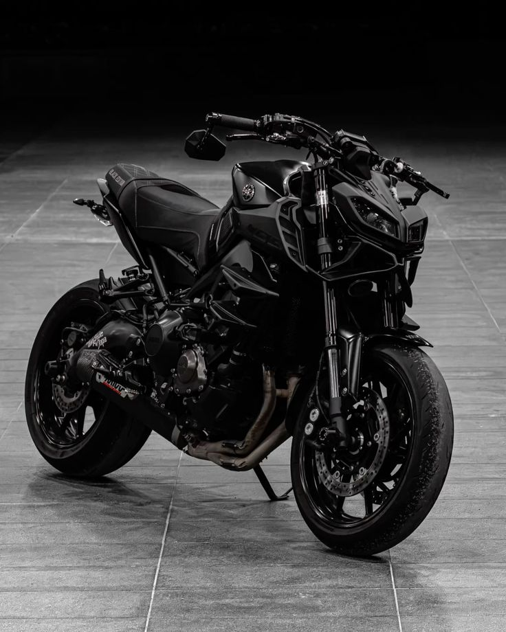
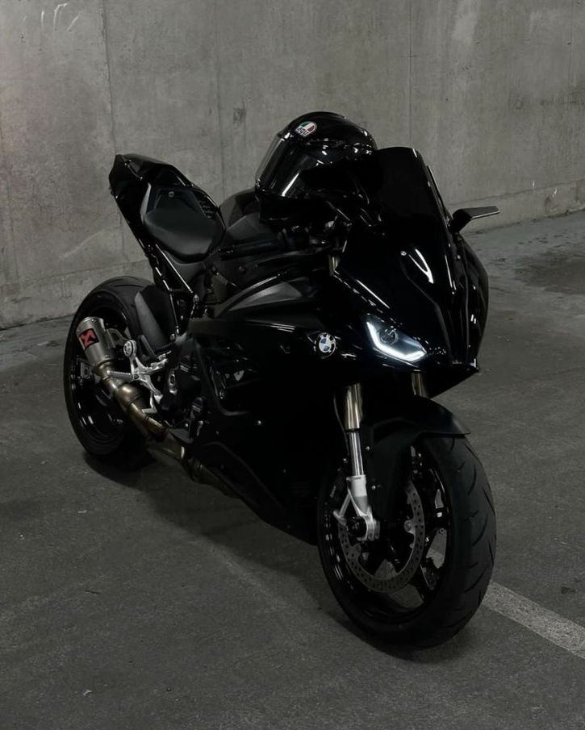
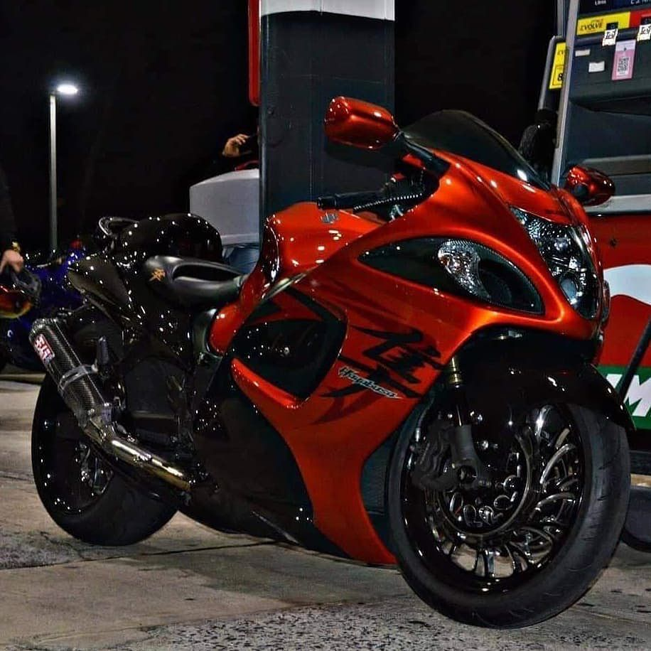

SPEED
FORCE
DISPLACEMENT OVER SECURITY
DISPLACEMENT OVER SECURITY
Las motos de alta cilindrada no son vehículos, son reactores sobre dos ruedas. La relación peso-potencia en una 1000cc puede superar a la de un Fórmula 1.
Son generalmente definidas a partir de 500-600 cc y superiores, destacan por su gran potencia, torque elevado y capacidad para viajes largos a altas velocidades.
Motor (El Corazón): Se basa en aumentar el volumen de la cámara de combustión (cc) para quemar más aire y gasolina, generando explosiones más potentes y mayor torque, lo que resulta en una aceleración y velocidad superiores. Suelen utilizar configuraciones de 3 o 4 cilindros para maximizar la potencia a altas revoluciones.
Gestión Electrónica: Incorporan inyección electrónica avanzada, modos de conducción ajustables, sistemas de frenado de alta gama (ABS), y control de tracción para gestionar la brutal potencia sin perder estabilidad.
Aerodinámica y Chasis: Diseñadas para maximizar la estabilidad, utilizando materiales ligeros para mejorar la relación peso-potencia y la agilidad.
uspensión y Frenos: Sistemas robustos diseñados para soportar el rendimiento y garantizar el control a alta velocidad.

Las motocicletas más rápidas del mundo alcanzan velocidades superiores a los 400 km/h, destacando la Kawasaki Ninja H2R, la MTT 420RR y la Dodge Tomahawk. Estas máquinas utilizan motores turboalimentados o turbinas de helicóptero para dominar rectas extremas.
Las motocicletas más utilizadas en competencias de alto nivel (Superbike/MotoGP) incluyen la Ducati Panigale V4 SP2, Yamaha R1M, Honda CBR1000RR-R Fireblade SP, y la BMW M 1000 RR. Para motocross y competiciones de agilidad, destacan modelos como la Yamaha YZ85 y opciones de alto rendimiento de KTM. Estas máquinas dominan por su potencia, tecnología avanzada y maniobrabilidad en pista.
Superbikes y Pista: La Ducati Panigale V4 R, Aprilia RSV4 Factory, y la Kawasaki Ninja H2 Carbon son reconocidas por su potencia extrema. La Yamaha R1 YZF es destacada por alcanzar velocidades de hasta 297 km/h.
Motocross y Todo Terreno: KTM es líder en campeonatos de Motocross/Trail. La Yamaha YZ85 es muy utilizada por su agilidad en competencias de tierra.
Competencia/Uso Mixto (Supermotard): La Toro Red 250 en su versión supermotard es popular por su estabilidad y control.
Deportivas asequibles: Modelos como la Honda CBR600RR y la Kawasaki Ninja ZX-6R son opciones comunes para entusiastas y competiciones menores.

La velocidad máxima oficial registrada en una moto de producción es de 400km/h, lograda por Kenan Sofuoglu en el puente Osman Gazi con una Kawasaki Ninja H2R de 310 CV.
